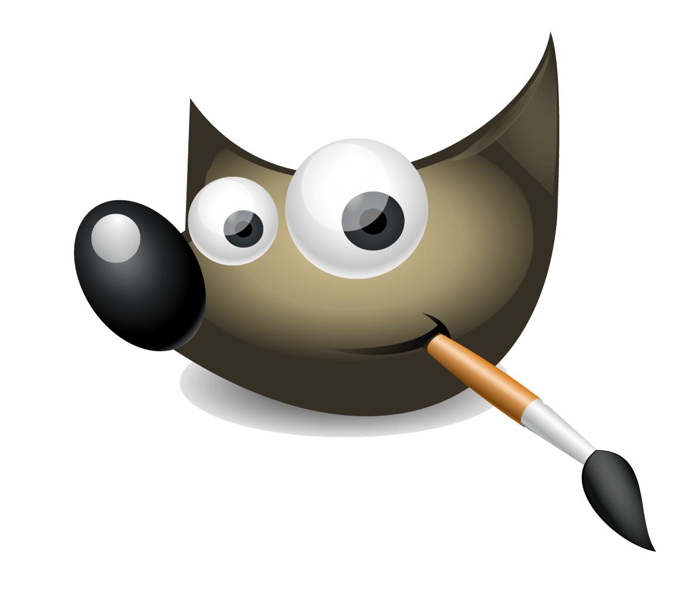
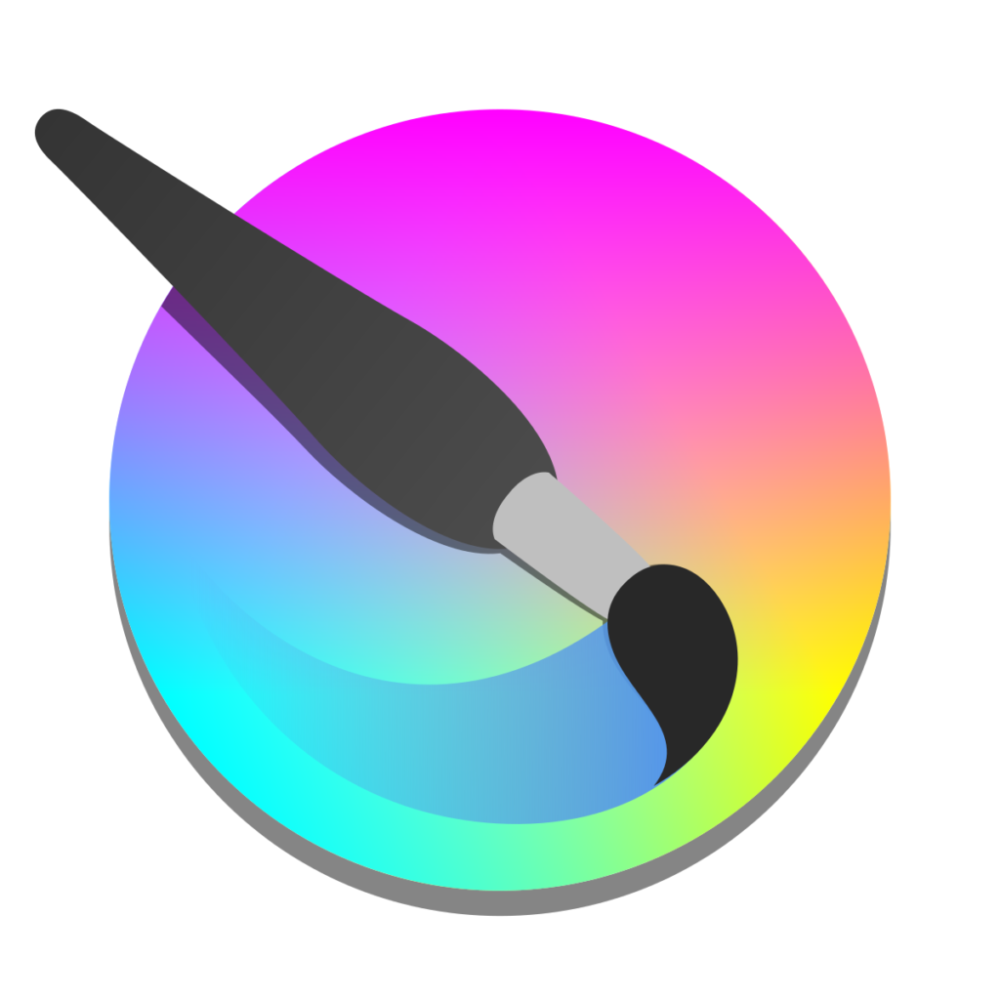
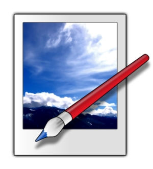

Software/Tools I use
2D Design and Animation:

GIMP
GIMP is a graphics editor that's useful for image editing and drawing raster graphics. It is more or less like the free and open source alternative to Adobe Photoshop.
I mainly use it to apply various filters on an image or making quick edits such as resizing or removing backgrounds.

Krita
Krita is another graphics editor that I use. I mainly use it for creating a lot of my 2D art and animations.

Paint.net
Paint.NET is a freeware graphics editor that I use for creating various pixel art and sprites for 2D related content.
3D Design and Animation:

Blender
Blender is a free and open-source 3D graphics program. It's mostly used for creating 3D models and animations but can also be used for VFX as well as video editing.
I use it to create 3D models, animations and textures.
Tree It
Tree It is a real time 3D tree generator that I use to create trees and various types of foliage for 3D games and animations.
Game Design:
Godot
Godot is a free and open source game engine that can be used to create 2D and 3D games. I'm currently using it for two of my projects, which inclue my main project, Vihltara.
Programming:

Visual Studio Code
Visual Studio Code is a free IDE that's more lightweight than Visual Studio. I use it to create programs in C#, Java and Python as well as designing cool websites such as this one.
Other:
Mad Productivity
Mad Productivity is a productivity app that I use to manage my tasks. I prefer using it because of the simple design and features such as making To-Do lists, Time Tracking and setting reminders.